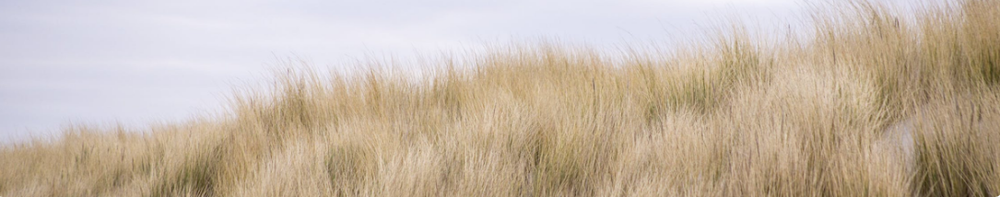

EXPLORD
FEATURED
Exploring the Curonian Spit
Published Yesterday, 21:23 Written by Daumantas
The Curonian Spit is a 98 km long, thin, curved sand-dune spit that separates the Curonian Lagoon from the Baltic Sea coast. Its southern portion lies within Kaliningrad Oblast, Russia and its northern within southwestern Lithuania. It is a UNESCO World Heritage Site shared by the two countries.
Geography
The Curonian Spit stretches from the Sambian Peninsula on the south to its northern tip next to a narrow strait, across which is the port city of Klaipėda on the mainland of Lithuania. The northern 52 km long stretch of the Curonian Spit peninsula belongs to Lithuania, while the rest is part of the Kaliningrad Oblast, Russia. The width of the spit varies from a minimum of 400 m in Russia (near the village of Lesnoy) to a maximum of 3,800 m in Lithuania (just north of Nida).
History
The Curonian Spit was formed about 3rd millennium BC. A glacial moraine served as its foundation; winds and sea currents later contributed enough sand to raise and keep the formation above sea level.
AUTHOR
Daumantas Banys
I am a 19-year-old student from Lithuania, Klaipeda, currently studying Digital Interaction design in Dundee, Scotland. I am highly passionate about User Interface design. Recently, I have started working with UI animations / (micro-) interactions. I am well aware how to create clean, appealing web and app designs having usability in the first place.
Follow us


Our portfolio
daumantasbanys.lt